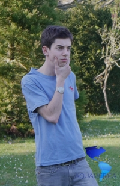
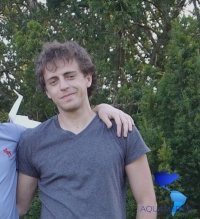

« Méfiez-vous de l’eau qui dort » pourrait-on dire de Grégoire. Paroles plus sages pourraient difficilement être prononcées car sous des allures calmes et peut-être dormantes, Grégoire brûle d’improviser, de rafraîchir et d’agiter dès que l’occasion lui est offerte. Il pétille souvent, bout parfois, aime faire des vagues sans jamais troubler. Vous vous en doutiez, il coulait de source qu’il s’intéresse à l’eau douce.

Captivé depuis son tout jeune âge par les aventures de Jack Kerouac, de Jack London et de Spiff le Spationaute, Antoine rêve de grands espaces, de fleuves et de cascades. Son imagination débordante l’empêche de stagner et il frémit d’impatience à l’idée de dévaler le continent américain et de s’y plonger dans une question qui le fascine : Celle de l’avenir de l’eau douce.
Ensemble, nous avons décidé de parcourir l’immensité du continent américain en s’intéressant à cette ressource fondamentale qu’est l’eau douce.
Suivez notre aventure !